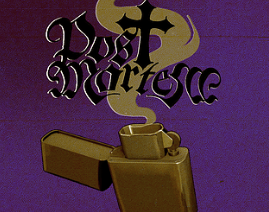
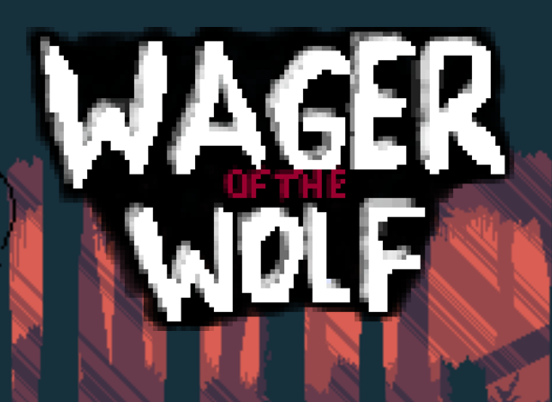
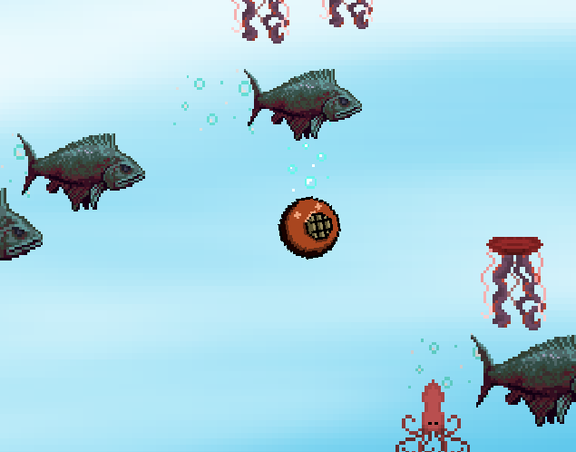
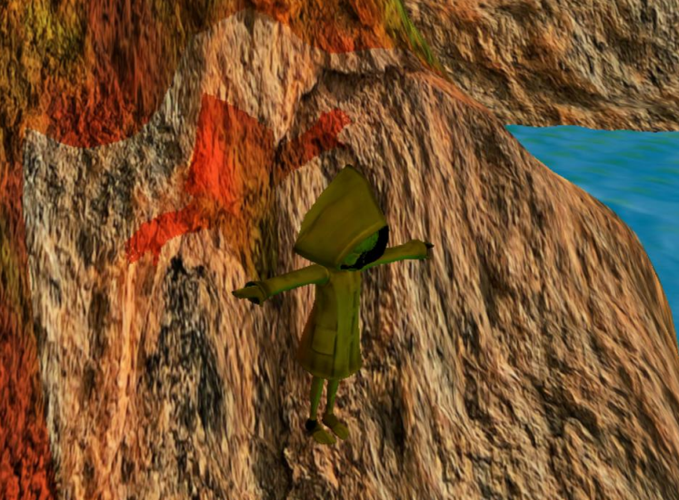
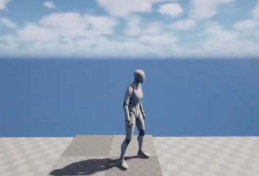
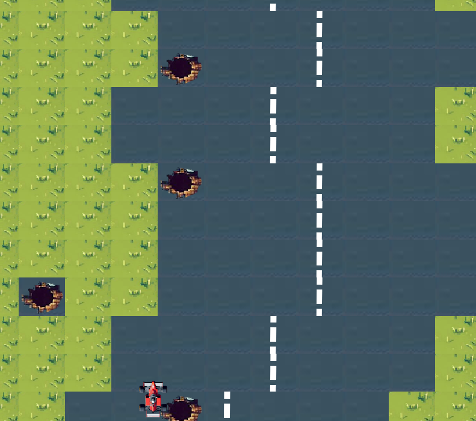

Post Mortem | 2026

Professional Project created using Unreal Engine as part of a mixed discipline group.
Post Mortem is a horror-focused, Metroidvania-inspired game in which you play as a Detective investigating an abandoned mansion, utilising the power of possession to switch between past and present.
Locked doors were an essential part of the level design in our game which I implemented the functionality for.
Wager of the Wolf | 2025

Game System and Architectures group project created using PS5 dev kits.
Post Mortem is a horror-focused, Metroidvania-inspired game in which you play as a Detective investigating an abandoned mansion, utilising the power of possession to switch between past and present.
Locked doors were an essential part of the level design in our game which I implemented the functionality for.
Submersion | 2024

SFML group project created during my 1st year of University.
Post Mortem is a horror-focused, Metroidvania-inspired game in which you play as a Detective investigating an abandoned mansion, utilising the power of possession to switch between past and present.
Locked doors were an essential part of the level design in our game which I implemented the functionality for.
Graphics Programming with Shaders | 2025

A scene created using DirectX11.
Post Mortem is a horror-focused, Metroidvania-inspired game in which you play as a Detective investigating an abandoned mansion, utilising the power of possession to switch between past and present.
Locked doors were an essential part of the level design in our game which I implemented the functionality for.
Gameplay Mechanics Development | 2025

Unreal Engine project focused on developing a mechanic in purely C++.
Post Mortem is a horror-focused, Metroidvania-inspired game in which you play as a Detective investigating an abandoned mansion, utilising the power of possession to switch between past and present.
Locked doors were an essential part of the level design in our game which I implemented the functionality for.
Artificial Intelligence | 2025

Self-driving race car controlled by fuzzy logic.
Post Mortem is a horror-focused, Metroidvania-inspired game in which you play as a Detective investigating an abandoned mansion, utilising the power of possession to switch between past and present.
Locked doors were an essential part of the level design in our game which I implemented the functionality for.
Graphics Programming | 2024

Simple graphics scene created using Skateboard Engine.
Post Mortem is a horror-focused, Metroidvania-inspired game in which you play as a Detective investigating an abandoned mansion, utilising the power of possession to switch between past and present.
Locked doors were an essential part of the level design in our game which I implemented the functionality for.